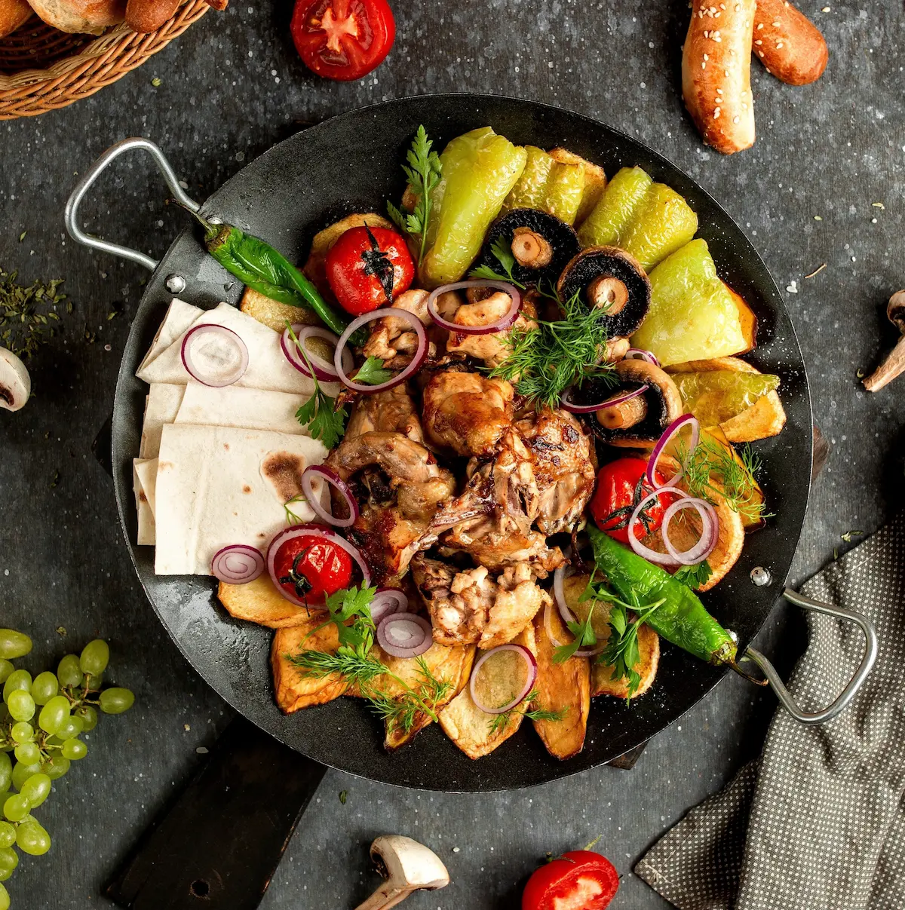
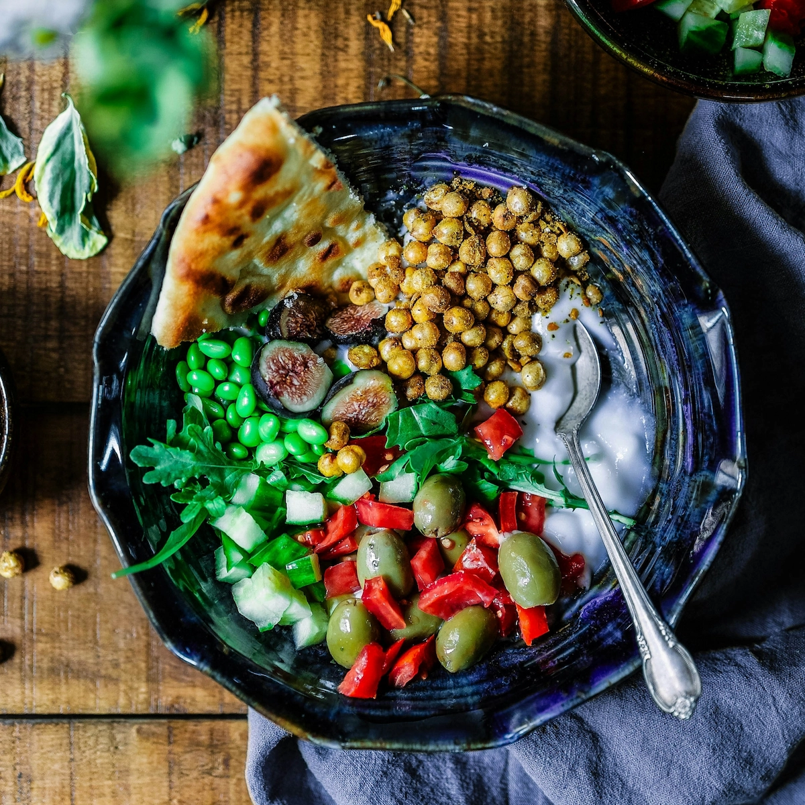
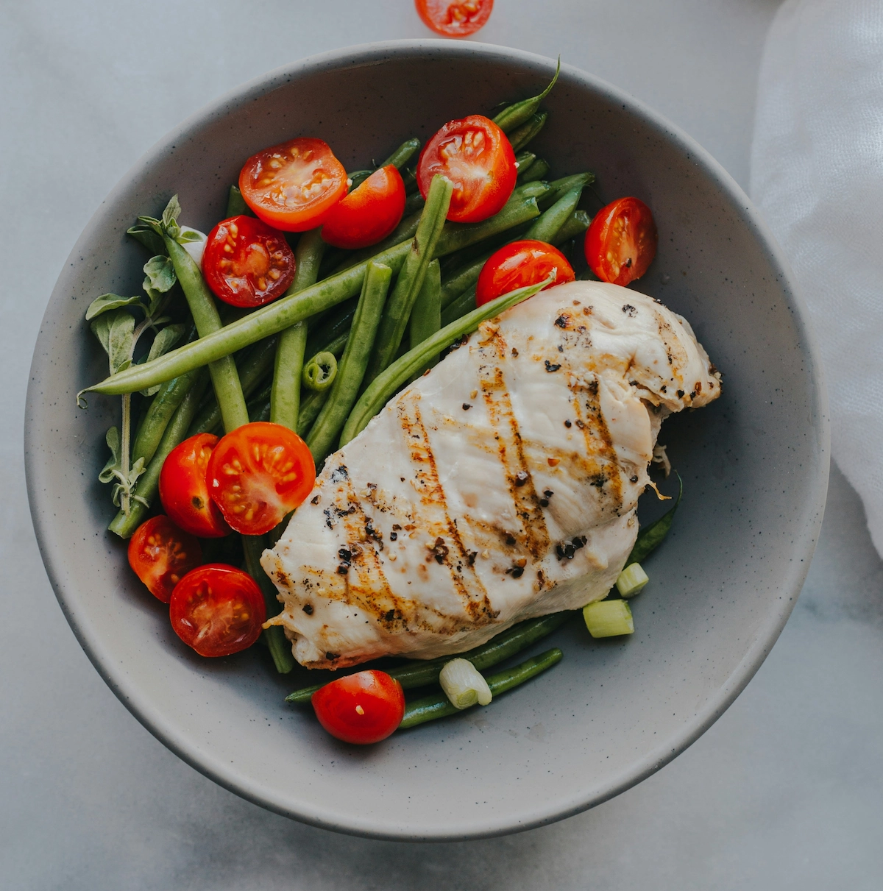

A TABLE WITHOUT BORDERS
Discover the world's most loved dishes
Search by name, country or dish type. Every discovery grows Nili's recipe collection.

Search by name, country or dish type. Every discovery grows Nili's recipe collection.

Fresh discoveries
Cook around the worldChoose a country, dish type, or search by name.